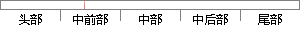

，石墨烯 的 导带和价带 相交 于狄拉克点，费米能级 可以在电场 的
片段位置图

相似结果
相似片段：
，热传导系数大于3000 W/mK，光吸收率约为2.3%，电阻率约为10 -6 Ω·cm，能够承受非常高的电流密度，约为铜的 [7] 100万倍，几乎不渗透任何气体。 在本征石墨烯中，导带和价带连接于狄拉克点，即费米能级的位置，随着载流子浓度的变化，费米能级的位置将发生改变，因此石墨烯的能带结构可以通过化学掺杂或外加门电压来调控。由于石墨烯特殊的物[8]
| 对比库： | 已发表资源库 |
| 来源： | "Research Progress of Optical Modulator Based on Graphene-Metal Composite Structures", Laser & Optoelectronics Progress, 2016. 查看来源 |
| 相似率 | 71.43% （轻度抄袭） |